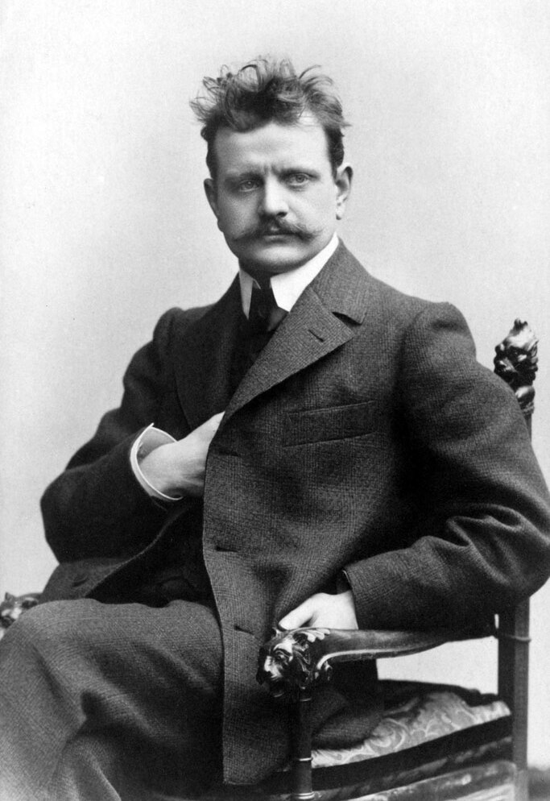
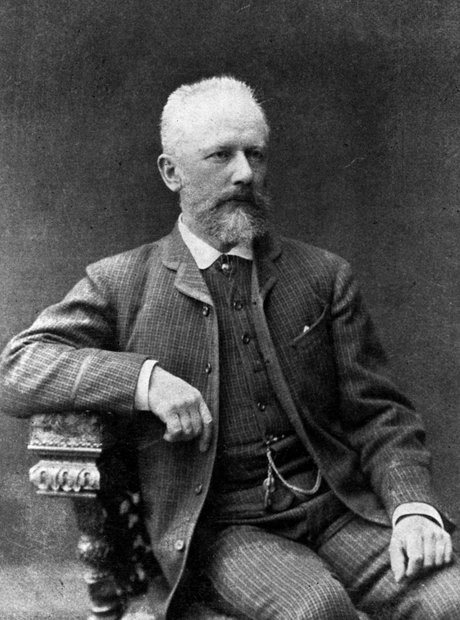
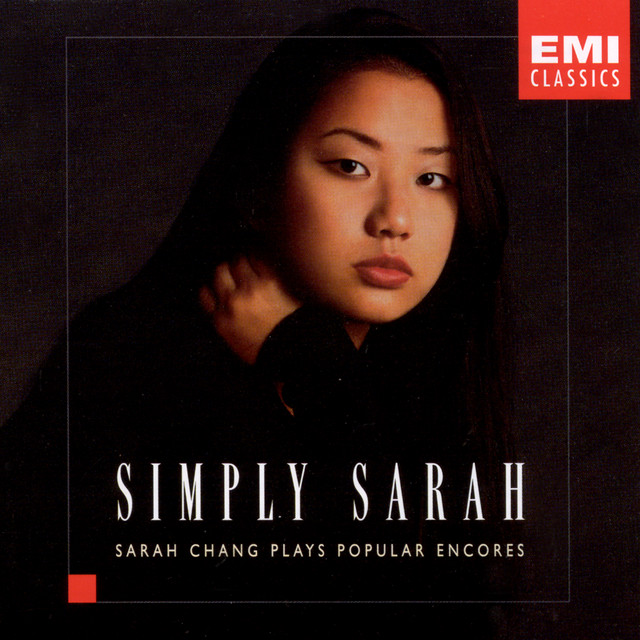
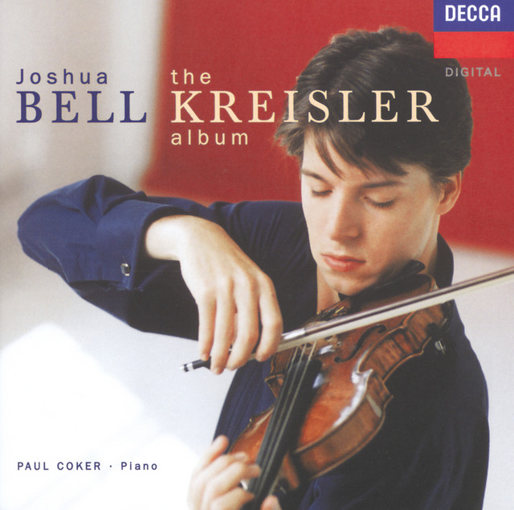
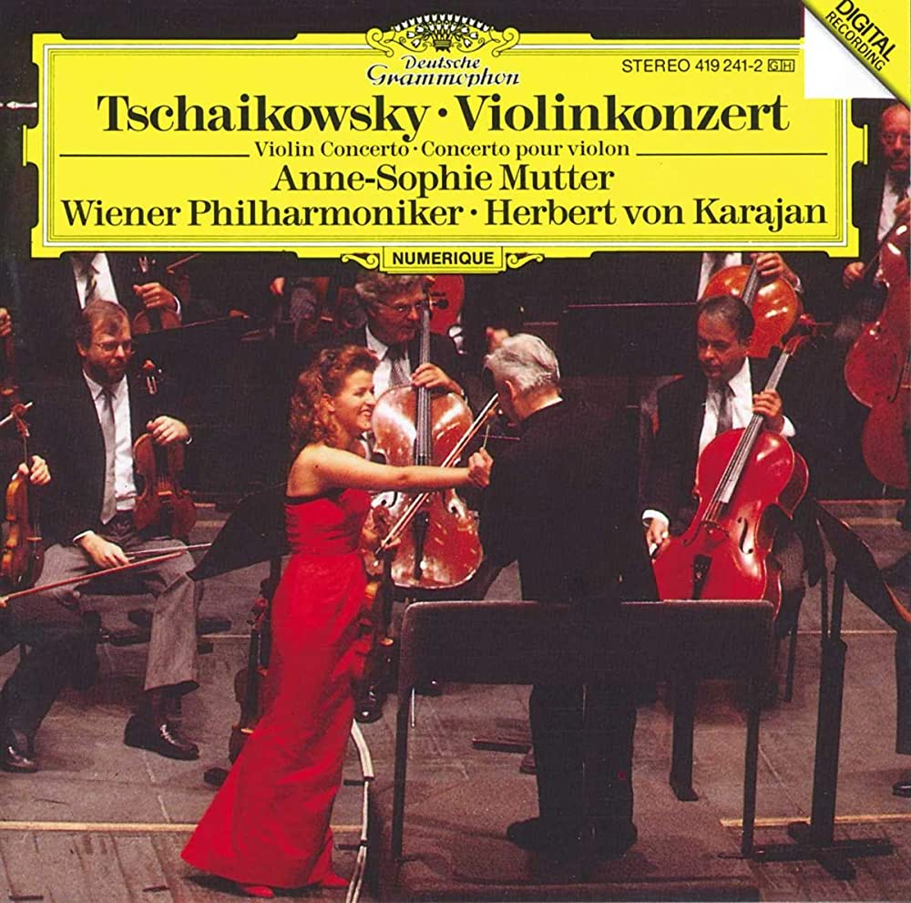

LEIPZIG
Made in
Germany
RECOMMENDATION
Composers of the Romantic era


Sibelius
Tchaikovsky



Zapateado Opus 23, No. 2 by Pablo de Sarasate
Tambourin Chinois, Op. 3 by Fritz Kreisler
Violin Concerto in D major, Op. 35 by Pyotr Ilyich Tchaikovsky
Chaconne in G minor by Tomaso Antonio Vitali